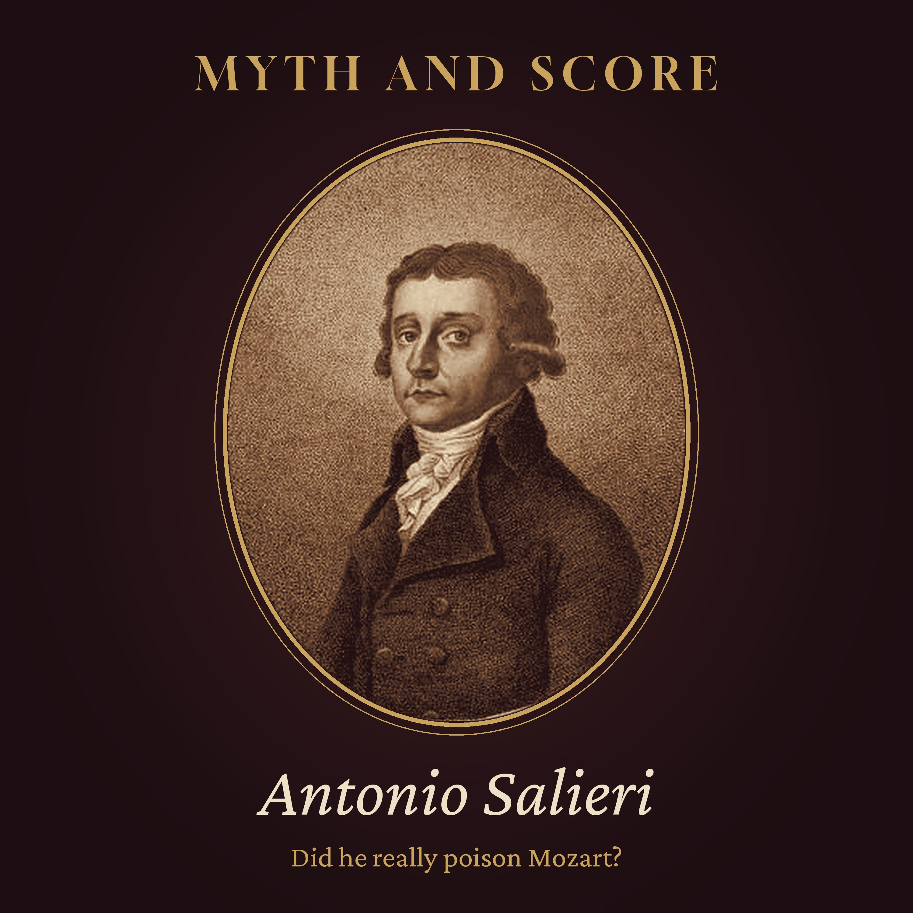

Myth and Score · Episode 1 · 45 min
Did Salieri Really Poison Mozart?
Mozart died in Vienna in December 1791, and the rumour that Antonio Salieri had poisoned him has outlived both men. We follow the two composers through Vienna: the orphan from Legnago who became the emperor's Kapellmeister, the freelancer from Salzburg, a contest staged at the two ends of a palace orangery, a poet who wrote for both, a cantata they composed together that was lost for two centuries and found in Prague in 2015, Salieri cheering The Magic Flute number by number, a stranger who ordered a Requiem, a funeral storm that never happened, what doctors think today, Salieri's pupils (Beethoven, Schubert, Liszt and Mozart's own son), an old man's denial in a hospital, and how Pushkin, Rimsky-Korsakov and Amadeus made the legend. Chapters: The story everyone knows · The boy from Legnago · The boy from Salzburg · Vienna in the 1780s · A contest in the orangery · The poet between them · The cantata in the archive · Salieri conducts Mozart · The last autumn · The stranger and the Requiem · December · The doctors · The teacher · The old man · The storytellers · The verdict · Listening again. Sources: Mozart's letters (Anderson), Deutsch's Mozart documents, Niemetschek (1798), John A. Rice's Antonio Salieri and Viennese Opera, Brown and Rice (1996), the Czech Museum of Music (2016), Zegers et al., Annals of Internal Medicine (2009), Moscheles' recollections. Episode picture: Antonio Salieri, engraving by Carl Traugott Riedel, Leipzig 1802, public domain (Wikimedia Commons). Read by a synthetic voice; script written and fact-checked by the show's team.
The script
In the winter of 1791, a young man died in Vienna after a short illness, and within weeks, people were whispering that he had been poisoned.
The young man was Wolfgang Amadeus Mozart. The whisper took thirty years to find a name, and that name was Antonio Salieri. It has stayed with him ever since.
Myth and Score. Episode one... Did Salieri really poison Mozart?
This episode is read by a synthetic voice. If these stories keep you company, follow the show... it helps others find it.
On this show, we take the most famous stories about great composers and hold them up to the light. Some turn out to be true. Some are half true. And some, like tonight's, are among the most successful rumours in the history of music.
Tonight's question is one that almost everyone has heard, even people who have never sat through a symphony. Did the powerful court composer of Vienna poison his young rival out of envy?
To answer it, we will walk through the lives of two real men, through the theatres and palaces of Vienna in the 1780s, through a cantata that was lost for two hundred years, a letter written by Mozart in the last autumn of his life, a hospital room in 1823, and finally a Russian poem, a Russian opera, and a film that won eight Academy Awards.
Chapter one. The story everyone knows.
Let us start with the story as most people know it.
In this version, Salieri is a man of moderate talent and enormous ambition. He has prayed for genius and been given only competence. Then a young man arrives in Vienna... rude, giggling, careless... and writes, without effort, what Salieri could never write in a lifetime of effort. Salieri hears the voice of God in Mozart's music, and he cannot bear it. He schemes against him, blocks his career, and finally, in some versions, poisons him. In others, he simply drives him into the grave. Mozart dies young and poor, and Salieri lives on, old and bitter, haunted by what he has done.
It is a wonderful story. It has everything... genius, envy, guilt, a murder, and a confession at the end of a long life.
The trouble is that most of it was put together long after both men were dead.
So let us go back to the beginning, to two real people, and see what the documents actually say.
Chapter two. The boy from Legnago.
Antonio Salieri was born in August 1750, in Legnago, a small fortified town on the river Adige, in what was then the Republic of Venice, not far from Verona. His father was a merchant. The family was comfortable, and the boy had music lessons early... the violin and the harpsichord, from his older brother, who had studied with Tartini.
Then the comfortable world fell away. In his early teens, Antonio lost his mother, and then his father. The orphan was taken first to Padua, and then to Venice, where a family friend saw to his education.
And in Venice, in 1766, something happened that would decide the rest of his life. The composer Florian Leopold Gassmann, who held a post at the imperial court in Vienna, was in the city for the opera season. He met the boy, heard what he could do, and offered to take him back to Vienna as his pupil.
Salieri was fifteen. He arrived in Vienna in June 1766, and he would live there for the next fifty-nine years.
Gassmann was more than a teacher. He gave the boy a home, and paid for lessons in German, in Latin, in Italian poetry. He taught him counterpoint himself, from the great old textbook of Johann Joseph Fux. He took him to the court, and introduced him to the emperor, Joseph the Second, who liked to make music with a small circle of musicians in the afternoons. The young Italian became one of that circle.
In his old age, Salieri remembered Gassmann with a gratitude that never faded. He called him a father. Years later, he would look after Gassmann's daughters, and teach two of them to sing.
By his early twenties, Salieri was writing operas of his own, and they were good. When Gassmann died in 1774, the emperor gave his young pupil Gassmann's posts... composer to the court, and director of the Italian opera.
He was twenty-three.
Chapter three. The boy from Salzburg.
Wolfgang Amadeus Mozart was born six years later, in January 1756, in Salzburg, a small city ruled by an archbishop.
His story is better known. His father, Leopold, was a violinist in the archbishop's orchestra, and a teacher of rare intelligence and rare ambition. When he understood what his son was... a child who could play the keyboard at four, compose at five, and play blindfold for the amusement of a court at six... Leopold put the family on the road. For the next ten years, Wolfgang and his sister Nannerl were taken across Europe, to Munich, Vienna, Paris, London, The Hague, and later to Italy, to play for kings and empresses before Wolfgang was ten years old.
The Mozarts were in Vienna in 1762 and again in 1767 and 1768... the years when the teenage Salieri was living with Gassmann and studying his counterpoint. It is possible that the two boys saw each other then. Nobody knows. There is no record of it.
What we do know is what happened next. Wolfgang grew up, and the child prodigy became a young man employed by the archbishop of Salzburg, a position that he came to hate. In 1781, after a famous quarrel, he left the archbishop's service and settled in Vienna, as a freelance musician.
That was unusual, and risky. Most composers of the time lived on a post... at a court, at a church, in a noble household. Mozart chose to live on what he could earn. He taught, he gave concerts, he published music, and he wrote operas whenever a theatre would have them.
He was twenty-five. Salieri, six years older, had already been a court composer in the same city for seven years.
Chapter four. Vienna in the 1780s.
The Vienna these two men shared was a city of about two hundred thousand people, inside its old walls and in the suburbs beyond them. At its heart was the court of the emperor, Joseph the Second... a restless reformer, careful with money, and deeply fond of music.
Joseph ran the court theatres himself. He chose the singers, approved the operas, and sometimes read the scores. And his taste changed. In 1778, he founded a company to perform opera in German... a national Singspiel, as it was called. A few years later, he brought back Italian comic opera, with a company of fine Italian singers, and the German company faded.
This mattered, because the composers of Vienna were divided along exactly these lines. There were the Italians, who held most of the court posts. And there were the German-speaking composers, who often felt that the Italians had closed the doors against them.
Mozart's letters to his father, in these years, are full of complaints about the Italians. In August 1782, he wrote about a post he had hoped for... teaching music to Princess Elisabeth of Württemberg, the young bride chosen for the emperor's nephew. The emperor had chosen Salieri to teach her singing. Mozart wrote that the emperor had spoilt everything for him, because he cared for no one but Salieri.
That is the first time Salieri appears in Mozart's letters as an obstacle. It will not be the last. In the years that follow, Mozart writes several times about cabals, about Italian intrigues, about people working against his operas.
Were they rivals, then? In a sense, yes. Vienna had only so many commissions, and an Italian with a court post and a freelancer from Salzburg were bound to compete for them.
But there is something worth noticing. Almost everything we know about this rivalry comes from Mozart's side... from letters written to his father, a man who expected his son to succeed, and to whom the son often explained why he had not yet done so. These letters tell us what Mozart felt. They do not tell us what Salieri did.
And when we look for what Salieri did, the picture changes.
Chapter five. A contest in the orangery.
On the seventh of February, 1786, the emperor gave a party.
His sister had come to Vienna with her husband, who was governor of the Austrian Netherlands, and Joseph wanted to entertain them. So he had the great orangery at the palace of Schönbrunn made ready... a long hall of glass, warmed in the middle of winter, full of orange trees in tubs.
At one end, a stage. At the other end, a second stage. And between them, tables laid for a banquet.
After dinner, the guests turned their chairs to the first stage, where a German company performed a short comedy with music by Mozart... Der Schauspieldirektor, The Impresario. A theatre manager is trying to put together a company, and two sopranos quarrel over who is the leading lady.
Then the guests turned their chairs around, to the second stage, where an Italian company performed a short opera with music by Salieri... Prima la musica e poi le parole. First the music, and then the words. A composer and a poet have four days to write an opera, and two sopranos quarrel over who is the leading lady.
It was a contest, of a friendly kind. Two composers, two languages, two little satires on the opera business, on the same evening, for the same audience.
Salieri's piece was the longer one, and it was paid for better. He received a hundred ducats. Mozart received fifty.
Some writers have seen in this an insult to Mozart. Others point out that Salieri's piece was the longer, and that Salieri was the senior composer at court. Either way, it is a picture of the two men as they really were in 1786... colleagues, working side by side, competing for the same small patch of the emperor's attention.
Chapter six. The poet between them.
There was one man who worked closely with both of them, and who left us his memories.
Lorenzo Da Ponte was a poet from the Veneto, a former priest with a gift for verse and a talent for trouble. He arrived in Vienna in 1781, and became the poet of the court's Italian opera.
His first libretto in Vienna was written for Salieri. It was called Il ricco d'un giorno, Rich for a Day, and when it was performed in 1784 it was a failure. Da Ponte blamed the music. Salieri, for a time, blamed the words, and said he would rather cut off his fingers than set another line by Da Ponte.
He calmed down, of course. They worked together again.
But in the meantime, Da Ponte had found another composer. In 1786, he and Mozart made The Marriage of Figaro. A year later, they made Don Giovanni, for Prague. And in 1790, they made Così fan tutte.
And here is a small surprise. The libretto of Così fan tutte, it now seems, was first meant for Salieri. In 1994, the American musicologist John Rice found, in the Austrian National Library, music by Salieri for the opening numbers of that very libretto... two short trios, never finished, never performed. Salieri began the opera, and then, for reasons no one knows, put it aside. And the libretto went to Mozart.
Da Ponte's memoirs, written many years later in New York, are not always reliable. He liked to make himself the hero of his own stories. But in all their pages, there is no talk of poison.
Chapter seven. The cantata in the archive.
Here is one of the most surprising pieces of evidence in the whole story, and it only came to light in our own century.
In 1785, the English soprano Nancy Storace, a star of the Italian opera in Vienna, lost her voice for a time. She had sung for both men. She would soon create the role of Susanna in The Marriage of Figaro.
When she recovered, Da Ponte wrote a short celebratory cantata for her return to the stage. It was called Per la ricuperata salute di Ofelia... For the recovered health of Ophelia. The music was written in three parts, by three composers. One was Salieri. One was Mozart. The third was a composer named Cornetti, whose identity is still uncertain.
The cantata was printed in Vienna, and advertised in the newspaper. And then, for more than two centuries, it was lost.
In 2015, a German musicologist and composer, Timo Jouko Herrmann, was searching the collections of the Czech Museum of Music in Prague for music by one of Salieri's pupils. He came across a small printed copy of a cantata, and read the names of its composers. The museum presented it to the public in February 2016, and it was played on a harpsichord for the first time in more than two hundred years.
Musically, it is a modest piece, written for an occasion. Nobody claims that it is a masterpiece. But historically, it says something important. In 1785, at the height of their careers, Mozart and Salieri sat down to write music together, for a singer they both admired.
That is not what sworn enemies usually do.
Chapter eight. Salieri conducts Mozart.
In 1788, Salieri became Kapellmeister to the imperial court, the most senior musical post in Vienna. In that position, he had a good deal of power over what was played at court, and when.
And what did he do with that power?
In 1789, The Marriage of Figaro was brought back to the court theatre, in a new production. It was a success, and played many times. It happened under Salieri as Kapellmeister.
In April 1791, the Society of Musicians in Vienna, a charity that raised money for the widows and orphans of musicians, gave two concerts in the Burgtheater. The conductor was Salieri. And on the programme was a grand symphony by Herr Mozart.
Scholars believe it was the symphony in G minor, the fortieth, perhaps in the new version that Mozart had made with clarinets... and among the clarinettists that evening were his friends, the brothers Anton and Johann Stadler. If that is right, it may have been the first time Mozart ever heard that version of his symphony played. And it was Salieri who stood in front of the orchestra.
Chapter nine. The last autumn.
In 1791, Mozart was thirty-five, and he was working harder than ever.
That summer, he was writing The Magic Flute, a German opera for a theatre in the suburbs run by his friend Emanuel Schikaneder. At the same time, he wrote another opera, La clemenza di Tito, for the coronation of the new emperor, Leopold the Second, as king of Bohemia in Prague. He was also writing a clarinet concerto for Anton Stadler, and a Requiem Mass, for a patron who did not want to be named.
The Magic Flute opened on the thirtieth of September, 1791, in the Theatre auf der Wieden. It was a success from the start, and played night after night.
Two weeks later, Mozart wrote a letter to his wife Constanze, who was away at the spa town of Baden, taking a cure. He told her about an evening at the theatre.
He had collected Salieri, and the soprano Caterina Cavalieri, in his carriage, and taken them to see The Magic Flute. You cannot imagine, he wrote, how charming they were, and how much they liked the music.
According to Mozart, Salieri listened and watched with great attention, and from the overture to the last chorus, there was not a single number that did not draw from him a "bravo" or a "bello". Salieri said that it was an opera worthy of being performed at the grandest festival, before the greatest of monarchs. And afterwards, Mozart drove them both home.
This is Mozart's own account, written privately to his wife, about seven weeks before he died. He seems pleased... even a little proud. There is no hint that he feared the man sitting next to him in the box.
Chapter ten. The stranger and the Requiem.
There is another story from that summer that fed the legend, and it deserves a few minutes of its own.
In the summer of 1791, a messenger came to Mozart with an unusual commission. He was to write a Requiem Mass, for a good fee, half paid in advance. But he was not to know who had ordered it, and he was not to try to find out.
To a man who was tired and overworked, there was something uncanny about it. The first biographers, writing a few years after his death, said that Mozart became convinced that he was writing the Requiem for himself. One of them, Franz Niemetschek, in a book published in 1798, told of Mozart sitting in the Prater with Constanze, in the autumn, and saying, with tears, that he was writing the Requiem for his own funeral... and that someone had given him poison.
This is the oldest written trace of the poison idea. Notice what it is... the memory of a sick man's fear, retold by his widow, years later. It names no one.
And the mystery of the stranger has a plain answer. The Requiem was ordered by Count Franz von Walsegg, a wealthy amateur musician who lived in a castle south of Vienna. His young wife had died that February. He wanted a Requiem in her memory, and he had a habit of ordering music from real composers, copying it out in his own hand, and letting his friends guess who had written it. The messenger was probably his steward.
Mozart did not finish the Requiem. After his death, Constanze needed the second half of the fee, and the work was completed by his pupils, chiefly Franz Xaver Süssmayr. Count Walsegg performed it, in memory of his wife, in December 1793, with his own name on the score.
There was no dark stranger. Only a widower, with a vanity of his own.
Chapter eleven. December.
On the twentieth of November, 1791, Mozart took to his bed. His hands and feet swelled. He had fever, and pain, and later a rash. His family and a few friends were with him. The best doctors in Vienna were called.
He died a little before one o'clock in the morning, on the fifth of December, 1791. He was thirty-five years old.
The death register of the parish gave the cause as "severe miliary fever"... hitziges Frieselfieber. To a doctor of the time, that described what could be seen, a high fever and a rash. It was not a diagnosis in our sense.
Two more pieces of the legend were born that week.
The first is the pauper's grave. Mozart was buried in the cemetery of St. Marx, outside the city walls, in a common grave, without a stone. To later generations, this looked like a scandal... the greatest composer of his age, thrown into a pit with the poor.
But it was nothing of the kind. Under Joseph the Second's burial regulations, most ordinary citizens of Vienna were buried this way... in shared graves, outside the walls, without monuments, for reasons of hygiene and economy. Mozart had a third-class funeral, the kind given to the great majority of the middle class of the city. It was the custom, not a disgrace.
The second piece is the storm. Later writers said that on the day of the funeral, a storm of snow and rain swept over the city, so that the few mourners turned back at the city gate, and no one followed the coffin to the grave. It is a powerful image. But it appears in accounts written decades later. A diary kept in Vienna that week by a courtier describes the weather as mild.
Chapter twelve. The doctors.
So what did kill Mozart?
Almost immediately after his death, there were rumours of poison. He was young, he was famous, and he had died after a short illness. In the eighteenth century, a sudden death often invited that kind of talk. A newspaper in Berlin printed the rumour within weeks. But nobody at the time named a poisoner, and no inquiry was opened.
Since then, doctors have offered well over a hundred explanations. Kidney disease. Rheumatic fever, which Mozart may have had as a child. Heart failure. An infection of one kind or another.
One of the most discussed came in 2009, in a study published in the Annals of Internal Medicine. A team of researchers went through the death registers of Vienna for the winter of 1791 to 1792. They noticed something. That winter, there was a small rise in deaths from swelling, or oedema, among young men... the same symptom that Mozart had. They suggested that a streptococcal infection was going around the city, and that Mozart may have died of a complication of it, a kind of kidney failure.
It is a theory, not a proof. The honest answer is that we will probably never know for certain. There was no autopsy. Mozart's grave was not marked, and the graves of St. Marx were reused after some years, so his remains were never found. There is a skull in Salzburg that some believe to be his, but tests have never shown that it is.
But "we do not know exactly what illness killed him" is very different from "someone poisoned him". Of poisoning, there is no evidence at all.
Chapter thirteen. The teacher.
For more than thirty years after Mozart's death, Salieri went on living and working in Vienna.
He wrote fewer operas as the years went by, and then none at all. But he became something else... the most sought-after teacher of composition in the city.
His pupils included Ludwig van Beethoven, who came to him in the late 1790s, already a young virtuoso, to learn how to write for the voice in Italian. When Beethoven published his first three violin sonatas, he dedicated them to Salieri.
They included Franz Schubert, who began studying with Salieri as a boy in the choir of the court chapel, and stayed with him for several years. In 1816, Vienna celebrated fifty years since Salieri's arrival in the city, and Salieri's pupils performed music they had written in his honour. Schubert was among them. That evening, he wrote in his diary about how wonderful it must be for an artist to see all his pupils gathered around him.
And in 1822, a boy of eleven from Hungary came to Salieri for lessons... Franz Liszt.
Accounts from people who knew him say that Salieri often taught young and poor musicians without charging them. When a singing school was founded in Vienna, in 1817, the school that grew into the city's conservatory, Salieri was its first director.
One more of his pupils matters very much to our story. Mozart's younger son, Franz Xaver Wolfgang, born just a few months before his father died, grew up to be a pianist and composer himself. As a young man, he studied with Salieri. And Salieri gave him a letter of recommendation, praising his talent.
Think about that for a moment. Constanze Mozart, the widow, outlived her husband by more than fifty years. She guarded his memory fiercely. And she allowed her son to study with Antonio Salieri.
It is hard to imagine a widow doing that with the man she believed had murdered her husband.
Chapter fourteen. The old man.
In the autumn of 1823, Salieri, now seventy-three, became seriously ill. He suffered a breakdown, in body and in mind. He was taken into the care of the general hospital in Vienna, and his family placed him under guardianship.
And now the old rumour, which had slept for thirty years, found its source. Word went around Vienna that in his confusion, the old man had accused himself of having poisoned Mozart.
The gossip reached Beethoven. By then, Beethoven was completely deaf, and his visitors wrote their side of the conversation in little notebooks. Several of those conversation books survive, and in them, Beethoven's friends write about the rumour. One of them writes that Salieri claims to have poisoned Mozart. Others repeat what they have heard in the city.
But the story was doubted from the start. The leading German music journal, published in Leipzig, mentioned the rumour, and dismissed it as the delusion of a sick old man.
And then there is the account of the pianist Ignaz Moscheles, who had been one of Salieri's pupils. He went to visit his old teacher in the hospital. Moscheles wrote that the meeting was a sad one. The old man was weak, and spoke in broken sentences, but he took his hand, and said that there was no truth in the rumour.
"I can assure you on my word of honour," Salieri is reported to have said, "that there is no truth in that absurd report. Of course you know... Mozart, I am said to have poisoned him. But no. It is malice, nothing but malice. Tell the world, dear Moscheles... old Salieri, who is soon to die, has told you this."
The two hospital attendants who looked after him also signed a statement, saying that they had been with him day and night, and had never heard him say such a thing.
Antonio Salieri died in Vienna on the seventh of May, 1825, at the age of seventy-four. At the memorial service for him, his own Requiem was sung... a Requiem in C minor that he had written, years before, for himself.
Chapter fifteen. The storytellers.
A rumour needs storytellers to survive, and Salieri's story found some of the greatest storytellers of the next century and a half.
The first was Alexander Pushkin, the Russian poet. In 1830, five years after Salieri's death, he wrote a short verse drama called Mozart and Salieri, one of a set of four short plays that he called his little tragedies.
In it, Salieri is a man consumed by envy. He believes that genius should be the reward of labour and devotion, and he cannot bear that it has been given instead to a cheerful, careless young man who does not seem to value it. At the end of the play, he pours poison into Mozart's glass. And then he asks himself the question that haunts the play... whether genius and villainy can ever live in the same person.
Pushkin was not writing history. He was writing about envy, about the strange unfairness of talent, and he borrowed two real names to do it. But Pushkin was a poet of enormous power, and his little play gave the rumour a shape that people could remember.
Nearly seventy years later, the Russian composer Nikolai Rimsky-Korsakov set Pushkin's play almost word for word, as a short opera in two scenes. Mozart and Salieri was first performed in Moscow in December 1898, with the great bass Fyodor Chaliapin as Salieri. Now the story could be sung as well as read.
And in 1979, the English playwright Peter Shaffer brought it to the stage in London, with a play called Amadeus. In it, Salieri tells the story himself, as an old man, to the audience... confessing his envy, and his war against God. In 1984, the play became a film, directed by Miloš Forman. It won eight Academy Awards, including Best Picture.
Shaffer and Forman were careful, in their own way. The film never shows Salieri pouring poison. Its Salieri destroys Mozart through manipulation and exhaustion. And Shaffer always said that his play was a fantasy on a theme, not a history.
But for millions of people around the world, Amadeus became the picture of these two men. The giggling genius. The tortured, jealous rival. The story became more famous than the history.
Chapter sixteen. The verdict.
So what is left, when we hold the myth up to the light?
We have two composers who worked in the same city, and competed for the same jobs. Mozart sometimes grumbled about Salieri, and about the other Italians at court, the way that a freelancer often grumbles about the people with secure positions. And in those years, Salieri was the more successful, and the more powerful, of the two.
We also have strong signs of respect. They wrote music together in 1785. Salieri began an opera on a libretto that Mozart then set. As Kapellmeister, he conducted Mozart's music. In the last autumn of Mozart's life, he praised The Magic Flute number by number, and Mozart was glad to tell his wife about it. Salieri later taught Mozart's son.
We have a death from an illness that doctors still debate, with no evidence of poison. We have a rumour that took thirty years to find a name, in the confusion of an old man's breakdown, and which he denied when he could. And we have three great works of art... a play, an opera and a film... which turned that rumour into one of the best stories ever told about music.
So, did Salieri poison Mozart?
The answer of the evidence is clear. No. There is no reliable evidence of poison, no evidence of a plot, and a good deal of evidence that the two men, whatever their rivalry, treated each other as respected colleagues.
The myth, though, is true in a different way. It is true about envy, and about how a story that fits our feelings can travel further than a fact.
Chapter seventeen. Listening again.
There is one more thing worth saying, because it is the quiet tragedy in all of this.
In his lifetime, Antonio Salieri was admired, generous and successful. He shaped the training of Beethoven, Schubert and Liszt. His operas filled theatres from Vienna to Paris. One of them, Les Danaïdes, was a triumph in Paris in 1784. Another, Tarare, written with Beaumarchais, the author of The Marriage of Figaro, was a success in Paris in 1787, and its Italian version, Axur, became one of the most popular operas in Vienna.
And yet, for nearly two hundred years, his name meant only one thing... the jealous man who killed Mozart.
In recent decades, that has begun to change. Opera houses and orchestras have started to perform his music again. Singers have recorded whole albums of his arias. Listeners are finding that Salieri wrote music that is elegant, dramatic, and at its best, genuinely beautiful. Not Mozart's music. But not the music of a mediocrity, either.
Perhaps the fairest thing we can do for him is simply to listen.
This has been Myth and Score. The sources for tonight's episode are in the notes.
Two hundred years later, the music is still here... and so, at last, are both their names.
Also from the late hours: Embers of History · Slow Orbit · The Quiet Armoury